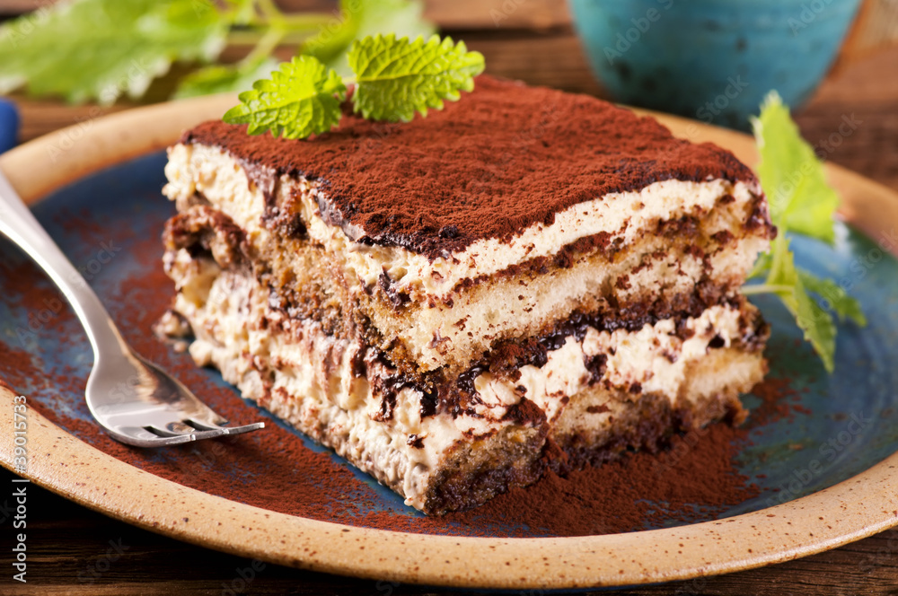

Tiramisu Recipe
Home

Description
Tiramisu is one of the more famous desserts its also one of my all time favourite!
I'll teach you how to make it simply and deliciously in todays recipe.
Ingredients:
- Ladyfingers
- Double cream
- Sugar
- Coffee Espresso is best!
- Cocoa powder
- Mascarpone cheese
The following are optional:
- Heavy cream
- Vanilla extract
Steps:
- Put 400ml Double cream, 250g of Mascarpoone and sugar in a large bowl
If you've opted for the optiona ingedients this would be the time to add them in , half of heavy cream and 2 tbsp of vanilla extract
- Whisk until the cream and mascarpone have completely combined and have the consistency of a thickly whipped cream
- Pour 300ml of coffee into a shallow dish , Dip in a few of the ladyfingers at a time , making sure its evenly soaked but not soggy. Layer these in a dish until you've used half of sponge fingers , then spread over half of the creamy mixture
- Then repeat the layers you should use up all of the coffee , finishing with a creamy layer.
- Cover and chill for a few hours or overnight ,You can keep in the fridge for up to two days
- To serve , dust with the cocoa powder and voila!